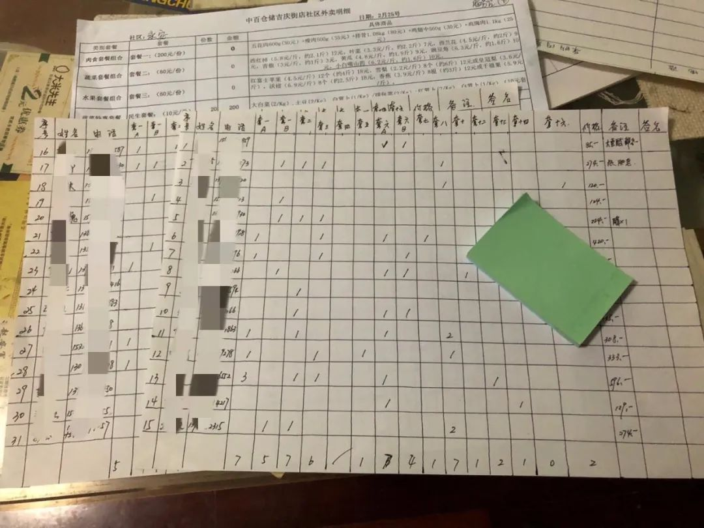
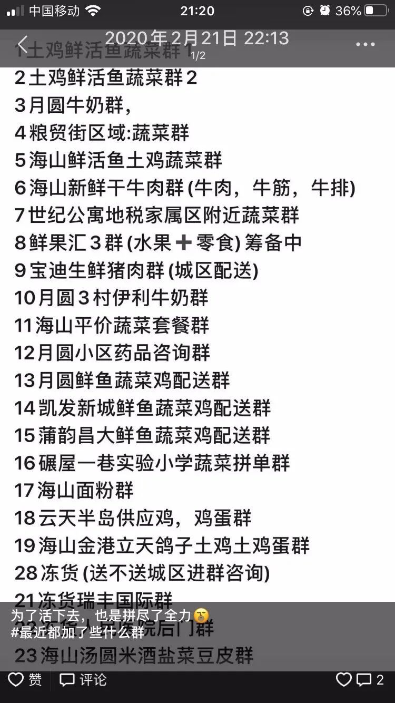
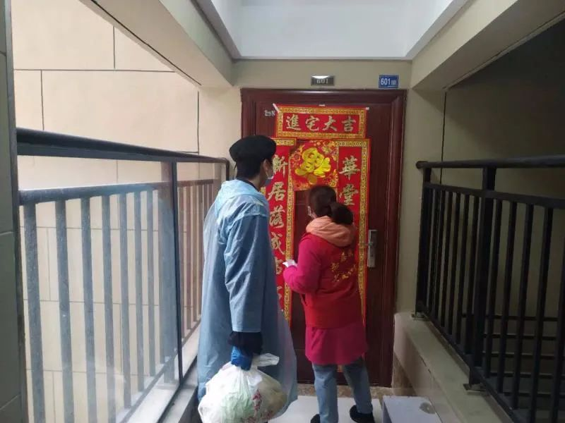

“封城”第35天，终于有鱼吃了 | 我的武汉日志
原文链接 备份链接 若干年后回望，这一定是一段值得铭记的日子。因为新冠肺炎疫情，许多家庭无法团圆。疫情数据地图的每次刷新都令人揪心。我们和千万武汉人在一起，这不只是一句安慰，因为没有人能够置身事外。 之前，我们向用户征集这段时间的故事， …
记者/杨宝璐 实习记者/胡琪琛
*编辑/计巍 宋建华*

林楠做的登记表
2月11日，武汉开始实行小区封闭管理，宅家里抗疫的武汉居民不得不面对又一重困难：如何买到每天饭桌上需要的蔬菜。
城市几乎停摆，但生活却不能。吃饭问题摆上案头，在这个特殊的时期，每个居民都使出了最大的劲儿，在“套餐”和“自选”中，努力维持着平衡，为自己和邻居寻求着最优解。
*有人为了能买到种类多一些的食物，至少加了20多个“买菜群”，每日设定不同时间点的闹钟试图在“秒光”的平台上拼手速抢菜；*有社区的志愿者为刚刚帮社区困难户买到的20份由财政补贴的“10元蔬菜包”而情绪高涨；*也有社区的工作人员由于人力不够只能无奈暂时放弃肉类和水果的团购配送，先紧着基本蔬菜的定期供应。*
*在2月29日的发布会上，武汉市副市长徐洪兰介绍，目前武汉市粮、油、盐等储备均在一月以上。**针对物价有所上涨的情况，正采取引导商超企业降价惠民、降价投放储备冻猪肉、推广“特价蔬菜包”等方式，保障市民基本生活需求。*

小梦能选择的食品套餐

不再对个人的“团购”和“套餐”
林楠坐不住了，她决定去报名社区采买志愿者。这是她所在的小区封闭管理的第十天，她觉得自己必须要做些什么。
林楠的家在江岸区天津社区的合作路上，这是一处靠近中心城区的老小区，出门不远就是繁华的江汉路，小区里是四栋六层高的老楼，一层四户，老人不少，邻里邻居亲近而熟识。她的生活从1月22号起，突然艰难了起来。
今年过年林楠原本打算和父母一起外出旅游，原定大年初一出发，因此没囤太多过年吃的菜。突如其来的疫情打乱了他们的计划，武汉封城通知下达的前一天，他们退了票，临时决定去超市买东西，“但当时没想到会禁行，东西大概只买了够四五天吃的。”
疫情发生前，林楠所在的地区配套设施完善，附近菜市场、药店和商场一应俱全，平时居民们多在附近菜市场买菜，但菜市场在春节前就收了档，赶上疫情，大家纷纷转战到步行十五分钟左右的沃尔玛超市。那段时间，林楠每隔四五天就去一趟沃尔玛，彼时她还在做志愿者，行动相对自由。
林楠回忆，那时去超市采购已经需要排队了，但只要能在中午前进超市，基本上还是能买到想要的菜。她往往在超市开门前就出发，九点半前后，顾客散在沃尔玛门前广场等候，门一开，工作人员挨个测体温，五十个人一拨，排队挨个进去。“武汉禁行后十来天之内，价格都挺正常的，就是正常的过年菜价。”林楠说。
进入二月，买菜开始变得困难。“只有早上刚开门那会儿，在第一拨冲进去，才能拿得到想要的东西，晚了菜和肉就没了。”林楠说。那时候食品的价格还算正常，方便面和速冻食品也算充足，菜和肉不多，没什么挑的余地，但勉强够买。货柜上没了往日一条条、一块块码好的、切好的、鲜红和鲜白的肉，而是用盒子分份儿装起来，要眼尖手快才能买到。她回忆一次去抢购的情景：“我买了几样东西，大白菜一块钱一斤，西红柿七块钱一斤，金针菇也七八块钱一斤，都还算正常。”那天她还抢到了一只冰鲜鸡，“那时候确实没别的肉了，当时我去拿鸡，整个冰柜上面就只有三只鸡，我抢到的那一瞬间，后面两只鸡就迅速被别人拿走了。”
又过了几天，速冻水饺、速冻牛排、披萨开始不见踪影，只有零星的汤圆还躺在冰柜里。
大部分武汉居民在漫长的疫情中，渐次将城里所有商超、快递、外卖APP和公号关注了个遍，林楠告诉记者，在实行小区全封闭管理之前，不少商超在APP首页上发公告，不再对个人销售，必须得团购一定份数，由超市进行配送。
林楠和邻居找到居委会询问情况，“那时有一些其他小区已经组织团购了，我们就跟居委会提建议，社区的网格员有每家的联系方式，他们拉了个微信群，告诉大家就在群里组织团购，够三份就下单。 ”
团购并不需要网格员亲自去超市，而是各大商超组织运货车直接运到指定地点，由网格员跟超市核对交接之后，再在群里通知居民下楼提菜。为了保证安全，网格员还会让大家提菜的时间尽量错开。
从一开始团购起，就只有“套餐”可以购买。林楠告诉记者，当时没什么选择，一类物品一个套餐，有蔬菜套餐、肉套餐、米面粮油套餐等等。“反正那些东西即使现在不需要，以后也会用，大家就都按照需要买了。”林楠说。
一个蔬菜套餐大概够一家三口吃三四天，林楠家先团购了一个中百超市50块钱的蔬菜套餐，其中包含一小棵大白菜、四个番茄、一把蒜苗、一把大葱、四根胡萝卜、一棵花菜。看上去还算价格便宜，但拿到菜之后林楠发现，这些菜品上还留着超市的价格标签，“那捆蒜苗，是拿袋子裹了一下，上面贴了一个价格标签，我们就把那几个价签全部加起来，发现总价只有40块钱。”林楠说。但让她恼火的不是“他们多挣了十块钱”，而是西红柿有两个已经“放不住了”，他们只能当天就吃掉，其他蔬菜也有许多烂叶子。
在小区封闭管理之前，还有小超市和便利店开着门，但因为没法补货，卖的东西很少，林楠的母亲需要买药，附近的药店都没货了，林楠只能找外卖员从其他地方买药和必备品。

居民为了买菜加的各种线上群
*每天定闹钟，买菜拼手速*
2月11日，为了彻底控制阻断传染源，武汉开始进行全市的小区封禁。
团购不是天天有，四五天才能进行一次，每次要买足四五天的蔬菜和肉储备，都要花上两三百，“我妈现在一顿只许我吃两块肉。”林楠说。
更让她崩溃的是日用品的匮乏。社区人手不够，能满足日常食物的购买已经勉强，日用品的团购一时没提上日程。很快地，林楠发现，家里的卫生纸也告急了。“套餐只有吃的。我到处在找哪里能买纸，实在买不到，邻居之间互相匀一匀，另外武汉市内的物流是还可以的，或者让朋友从什么渠道买一些，再给我寄过来。 ”
在网上下单也是一条途径，但拼手速是个“人品活儿”，“真的是秒光。”林楠说，每个超市放出团购信息的时间不一样，她每天早上6点、8点、晚上9点、12点分别定了闹钟，不同的超市轮流试，直到哪家能买到为止。
在武汉儿童医院工作的医生小梦没有这样的空闲时间盯着手机。虽然此次疫情中，小梦并没有被安排在隔离病房工作，但日常的工作任务繁重，她没法时刻盯着手机抢菜。
隔离病房的同事一日三餐都可以在食堂解决，但普通病房的医生下班后，还是得自行解决买菜问题。
小梦告诉记者，她家位于东西湖区的园博社区，在三环以外，小区既有高层，也有6层小楼，网格员把居民组织起来，但告诉他们，团购这件事，社区帮不上忙，因为没有车，没法组织人把东西运回来。“到目前为止都还是让商家送到门口，或者是志愿者和好心人开着自己的车，去超市帮大家带东西回来。”据她了解，她所居住的小区周边的三四个小区也都靠居民自发组织购买。
小梦家小区门口有家小超市，大小只有两个711便利店那么大，小区刚封闭那天，老板接了100多个订单，从早上9点开始发货，一直忙到半夜12点。“之前套餐确实蛮贵，我们小区有人买，但不太多，门口小超市物价便宜，跟平时差不太多，”小梦说，但小超市不卖新鲜蔬菜水果，只有米面粮油和调料以及基本生活用品。
全市小区封禁来得突然，在此之前，小梦通常在上下班时顺路买东西，尽管湖北其他地区已有封闭小区的先例，但她没做好这个心理准备，没等囤好东西，小区就封禁了。
为了买菜，她加了好几个群，“我们这边就是没人来统筹。买鱼要加一个群，买水果要加一个群，反正买一种东西加一个群。一天到晚不停下单，不停楼上楼下跑去拿东西，大家实际上外出的次数更多了，因为你在一个群根本买不齐所有的东西。 ”小梦说。
医院也会组织医护人员团购，让超市把物资都送到医院，供医护人员下班时带走。但小梦表示，她没法参与医院的团购，“我家比较远，离医院有八九公里，骑车下班特别不好带东西。而且团购必须要买到一定的数量，比如买够几百块、或者得买10斤、20斤的，非常难带。”小梦说。

社区工作人员给老人发放爱心菜
武汉各大商超被约谈之后
前几天，网上一个关于“武汉嫂子怒骂超市套餐”的视频火了之后，武汉各大商超均被约谈。不少超市就此解除了套餐，居民需要什么，还是直接报给采买人员进行逐条采购。
但这大大增加了采买人员的负担。“搞这个套餐，大家的怨气越来越大，但如果让网格员自己去把整个小区的采买都揽下来，人手又不够。”林楠说，为了腾出人手，她所在的一元街街道社区不得不招募志愿者。
“其实政府可能没顾及到所有小区的状况，不准再搞套餐，对我们来讲是很为难的，现在还在做商品的单品拆分，老旧小区更难了，因为工作服务人员的节奏跟不上，他们不可能每天就是为了菜去操心，对不对？”球场街道球新社区线上居民志愿者吕先生说。
吕先生是他所在社区的物资采购员，以前，他只知道自己社区大，但不知道有多少人，直到这次当采购员，他才知道，整个社区有2700户，5000多人，但社区的正式工作人员就只有7个。
吕先生告诉记者，在他们这个老旧小区，老人居多，让他们操作手机买菜难度很大。另外，武汉超市很容易爆单，下单以后运输的时间稍长一些，居民怨言就很多。因此，往往第一批还没有到，他就得赶快先抢第二批的物资。
实际上，仍有部分超市还在维持着套餐形式，只不过套餐种类更多、更细，价格也有所回落。“其实只要不是居民反感的套餐，我觉得是很好的。要去掉的无非是一些不合理的套餐。”吕先生说。在此之前，曾有报道称，武汉老人遭遇买卫生纸搭配卫生巾的捆绑销售。
吕先生所在的社区至今仍采用的是套餐式购买形式，但只能买满足基本需求的套餐。“我一开始还带领大家团购过水果，但现在要负责整个社区居民了，这块肯定要割舍掉。”他说。
团结新村社区78岁老人魏翔告诉记者，老年人不会网购，以往买东西都是付现金，现在没处买东西，更没人收现金，因此社区采取的办法是，单居老人不收钱，也不直接接触，送菜摆在门口，老人看见东西，自行带回家，等疫情结束后再统一结账。
菜一般三四天送一回，老人们要是没有米面粮油，可以给社区打电话，由社区帮忙购买，“肉是没有的，但蔬菜能保证，当中有坏的、有烂的，现在也不谈什么质量好，只要有吃的就行了。”
在深一度记者接触的若干社区中，采购主要是由网格员将社区居民组织起来，后由志愿者牵头协调采买事务。林楠表示，她所在的社区也只有六七个正式工作人员，她能理解社区网格员的辛苦。“他们（网格员）每天疲于奔命，还要负责在路口查体温、给重病老人送药，甚至包括社区街道的消毒，“如果让他们每天只在群里面就盯着消息，估计他们就啥都干不了。”
林楠所在的社区，一个网格群有100多人，买菜时，每家遇到的问题都不一样，“我这个套餐如果不想要能不能换、有没有某个牌子的、中百仓储怎么给我们送……网格员没法每天在群里回答大家的问题。”林楠说。
2月24日，武汉推出了有财政补贴的“10元蔬菜包”，林楠告诉记者，这个消息还是居民告知给社区工作人员的。“他们说他们不知道，我们就说，我们自己打电话到了中百仓储，已经问过了，超市都有，只是限量的，除了这种限量的之外，还有普通价格的。他们才知道有这样的改变。”

王希所在小区送的爱心肉
财政补贴的“10元蔬菜包”
深一度记者了解到，为满足疫情防控期间全市居民基本生活需求，武商超市、中百仓储、中商超市、家乐福、沃尔玛等大型商超企业，纷纷开始实施更大力度的惠民销售。
首先是面向低收入群体推出“特价蔬菜包”，所谓“政府补贴10元蔬菜套餐”，每份包括大白菜、土豆、白萝卜、胡萝卜等三到四个品种，每套仅售10元，重量为10斤。社区可有组织地团购、代购，重点保障辖区低收入群体购买。商家进销差价部分由政府按”一元菜”的相关政策给予财政补贴。此外，政府储备冻猪肉销售价格按照低于市场价15%销售，居民可通过团购、代购套餐形式购买。
另外，其他省市捐赠给武汉的爱心蔬菜，也会通过街道分发给居民，但需要社区自行运输和发放，这考验着各个社区的车力、物力和人力。
一开始，林楠所在的社区很难调出余力把爱心菜运回来。社区困难在于凑不出车。两辆备用车，其中一辆，每天要由居委会的两名工作人员和一个志愿者，转遍武汉三镇各个药房去帮社区里中风、重症病、慢性病病人买药，另一辆车则待命处理突发事件，“比如前两天有个ATM机隔间里的流浪人士，就用车送到了派出所安置。”
2月20日前后，林楠所在的社区拉来一批爱心菜，“有白萝卜和大白菜，我妈就领了两个白萝卜。但我之前听别的小区的人说，爱心菜随便拿，不管拿多少，反正一定要签名就行。”
为了解决社区运力紧缺的情况，林楠向社区争取了一张机动车通行证，“只要社区能够想办法开证明，那么多人有车，搞两辆车不就完了吗，最后社区也同意了。”她说，一拿到证明，她马上联系小区居民借车运菜，总算给社区拖回来一批爱心菜。“有茄子、青椒、南瓜、还有木瓜，每户都能领到。”
社区辖区不小，蔬菜运回来之后，每到一个路口就下一批货，派个工作人员在路口接应，并通知居民下来领。
一些物业管理做得好的小区则可以避开这些麻烦。王希所在的新城璟悦城小区在汉阳区三环内，她告诉记者，小区封闭后，物业负责每周团购一到两次的青菜套餐。物业会提前发公告让大家选择，每次可买25斤到30斤，只花一百多块钱，价格实惠。业主也无需下楼领菜，物业清点完蔬菜之后，送到每一户家门口。
爱心菜也由物业领回来。有一次甚至给65岁以上的老人、有孕妇或产妇的住户，每户发了一斤肉，业主只需提供身份证明即可。

由政府补贴的“十元蔬菜包”
被志愿者接管的采买业务
2月25日，林楠戴上红袖章，和同社区其他小区的另外两个居民一同成为了社区采买志愿者。“我说赶紧把我招去，让我上岗，我可以解决我们家和邻居所有的购买需求，真是把我急死了。”
之前做志愿者时练就的统筹能力派上了用场，“社区工作人员要做的事情是不少，但他们对于现代化的统筹手段掌握很慢，所以做事效率特别低。”林楠说。
“当时我们就跟主任说，你不用那么复杂，就把所有需要采买的东西，包括怎么定、怎么收钱、怎么对接等事务统统交给我们负责，社区只要帮我们出证明就行。”林楠告诉记者。
虽然各大商超因“套餐”被约谈，但整改之后，林楠所在社区对接的商超还是选择了继续使用套餐的形式，只是套餐类型比以前精细了许多，价格也降了下来，蔬菜、水果、米面粮油等一共有18套。接受任务后，林楠和另外两个志愿者将他们所在的小区联动起来，她往群里发了购买链接，手机那一端，群成员在群里接龙报上自己需要的套餐，手机这一端，林楠做一张表格，根据接龙报上来的编号，在各个套餐栏目下逐一打勾，最后统计每个购买者的总价。表格做好了之后，往群里一发，告诉大家怎样看截图，核算自己的购买金额，确定无误后直接转钱。
每到账一户，林楠就标个记号，最后核算总钱数，直接找超市仓储的经理下单，等待配送就行。“我从前一天下午1点半拿到了第二天的物资套餐清单——因为超市现在每天会根据仓库的储备，制定不同的套餐——发在群里，告诉大家，购买接龙到晚上8点为止。给大家6个小时时间，晚上8点开始统计表，收钱，到晚上10点就搞定了。 ”
她所在的天津路社区一共分为六个网格，第二天，她去社区办公点时，其他网格员都围过来，问她怎么搞定的。于是包括林楠在内的三个志愿者干脆跟网格员又建了个小群，“我在我们网格群里发什么消息，就让其他网格员把这些话复制，粘贴到他们所管理的网格群中。 ”最后，连其他几个网格群的购买统计，也统归到林楠他们三人手中。
“我们家暂时没有太多需要解决的东西了，包括卫生纸什么的就都可以买了。”林楠说。
每次的新“收获”都让林楠情绪高涨。2月28日，在林楠所在社区对接的中百仓储，10元蔬菜包只有200份，她搞到了20份，回来的路上，一路分发，她把这些10元蔬菜包全留给了社区困难户。
（应受访者要求，文中人物均为化名）
**【反侵权公告】本文由北京青年报在今日头条独家首发，未经授权，不得转载。**


3例病理解剖初步诊断完成 死者肺部有黏液性分泌物| 深度报道
 不想成为英雄，只是想不被绝望困住|深度报道
不想成为英雄，只是想不被绝望困住|深度报道

送别李文亮医生：愿天堂没有病毒| 深度报道


原文链接 备份链接 若干年后回望，这一定是一段值得铭记的日子。因为新冠肺炎疫情，许多家庭无法团圆。疫情数据地图的每次刷新都令人揪心。我们和千万武汉人在一起，这不只是一句安慰，因为没有人能够置身事外。 之前，我们向用户征集这段时间的故事， …
原文链接 备份链接 他们理解小区被封，理解只能选择被塞了四大包汤圆的团购套餐，理解菜价成倍上涨，理解要继续忍受生活上的不便，才有可能早一点等来结束的一天。 文 | 谢婵 编辑 | 小豆 武汉伢王嘉兴给父母打电话，得知小区业主群里推荐 …
原文链接 备份链接 一级批发商并没有太多涨价，大型超市的价格也相对稳定，但经过中间环节，居民最终支付的菜价上涨明显。共有33家电商平台可以提供生鲜外卖服务，一些社区团购的菜价高、质量参差不齐、购买不便，居民希望服务改进的呼声较高 文 |《 …
原文链接 备份链接 日常的平淡生活 在如今成为奢侈 1月23日早上6点，家住武汉市江岸区的徐哲，被连续不断的手机振动声吵醒。 各大新闻APP都推送了“武汉封城”的新闻，时隔1个月，徐哲仍然记得那天早上6点钟小区附近二环线上嘈杂的车流 …
原文链接 备份链接 一个漫长的三十天熬过去，不知道能不能写到下一个三十天。同事们陆陆续续返工，有搭普通火车颠簸回的，有花几百从农村坐黑车走小路，也有和其他人拼车自驾的。西安刚出的复工政策只需要做核酸检测，无需隔离14天，直接拿结果去上班， …